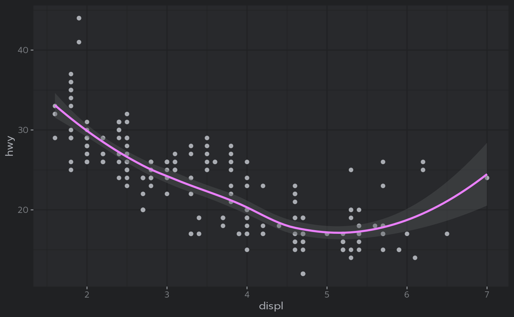
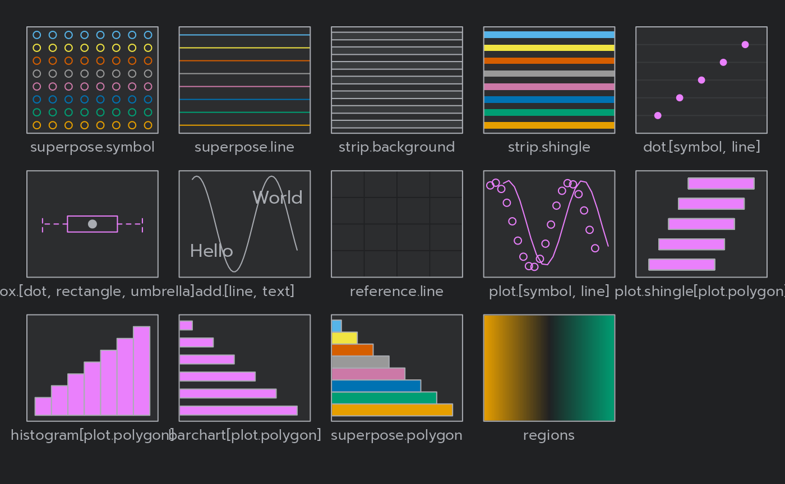

R Markdown
This is an R Markdown document themed with {bslib}
package. bslib makes it easy to customize the main
colors and fonts of a html_document, flexdashboard::flex_dashboard,
shiny::fluidPage(),
or more generally any website that uses Bootstrap for styling. The
theme parameter in the yaml front-matter of this Rmd
document describes a bslib::bs_theme()
object, which provides access to 100s of theming
options (via its ... argument) in addition to the main
options demonstrated here (e.g., bg, fg,
primary, etc).
This particular example uses bslib’s default Bootstrap
version (which, at the time of writing, is Bootstrap 5). However, if
reproducibility is important, it’s recommended that you “lock-in” the
version by adding version: 5 to the theme
definition.
Themed Plots
When running this document with {thematic}
installed, the thematic::thematic_rmd(font = "auto")
effectively translates theme (CSS) settings to new global
theming defaults for ggplot2, lattice, and
{base} R graphics:
library(ggplot2)
ggplot(mpg, aes(displ, hwy)) +
geom_point() + geom_smooth()## `geom_smooth()` using method = 'loess' and formula = 'y ~ x'
lattice::show.settings()
plot(pressure, col = thematic::thematic_get_option("accent"))